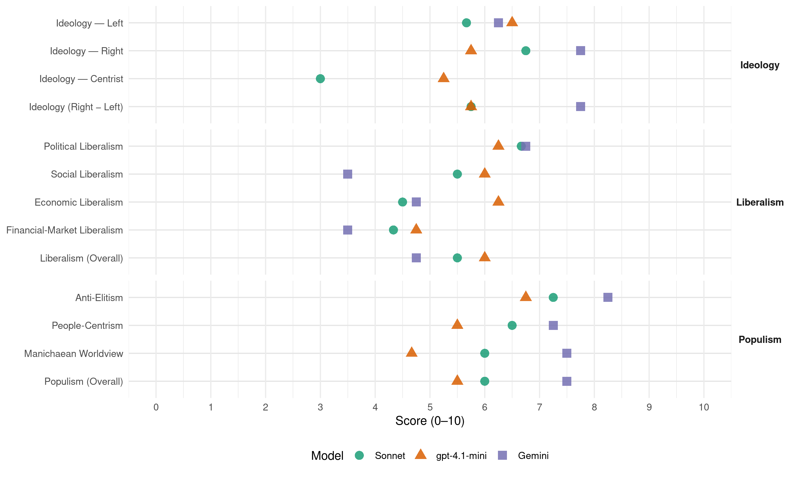

Jobbik (Hungary, 2018)
manifesto_id 86710_201804
Get full text: This site shows derived annotations and short verbatim quotes only. The full manifesto text is © Manifesto Project / WZB — obtain it via manifesto-project.wzb.eu using the manifesto_id above.
Headline scores
| Dimension | Sonnet | gpt-4.1-mini | Gemini |
|---|---|---|---|
| Populism (Overall) | 6.0 | 5.5 | 7.5 |
| Anti-Elitism | 7.2 | 6.8 | 8.2 |
| People-Centrism | 6.5 | 5.5 | 7.2 |
| Manichaean Worldview | 6.0 | 4.7 | 7.5 |
| Ideology (Right − Left) | 5.8 | 5.8 | 7.8 |
| Liberalism (Overall) | 5.5 | 6.0 | 4.8 |
| Political Liberalism | 6.7 | 6.2 | 6.8 |
| Social Liberalism | 5.5 | 6.0 | 3.5 |
| Economic Liberalism | 4.5 | 6.2 | 4.8 |
| Financial-Market Liberalism | 4.3 | 4.8 | 3.5 |
Evidence per dimension
Economic Liberalism
Gemini · score 6.0 · verified · chunk 1
“csökkentjük az adóterheiket, a különböző bevallások rendszerét tovább egyszerűsítjük”
hazai mkkv-k érdekeinek figyelembevétele egyértelműen prioritást élvez: csökkentjük az adóterheiket, a különböző bevallások rendszerét tovább egyszerűsítjük, a megújult adópolitikán
Gemini · score 5.0 · verified · chunk 2
“vállalkozásbarát környezet kialakítására, vállalkozókat segítő”
visszaszorításával párhuzamosan vállalkozásbarát környezet kialakítására, vállalkozókat segítő aktív állami szerepvállalásra van
Gemini · score 4.0 · verified · chunk 3
“minimum 80 százalék hazai, maximum 20 százalék import”
külföldi és silány minőségű termékek dömpingjének. A multinacionális bevásárlóközpontok élelmiszer-kínálatán belül a „minimum 80 százalék hazai, maximum 20 százalék import” elvének szerzünk
Gemini · score 4.0 · verified · chunk 4
“kisebb magyar vállalkozások közvetlenül is szerződhessenek”
nagyobb állami tenderek megbontásával biztosítható, hogy a kisebb magyar vállalkozások közvetlenül is szerződhessenek egy-egy állami
gpt-4.1-mini · score 7.0 · verified · chunk 1
“csökkentjük az adóterheiket, a különböző bevallások rendszerét tovább egyszerűsítjük”
Az adórendszer reformja során a hazai mkkv-k érdekeinek figyelembevétele egyértelműen prioritást élvez: csökkentjük az adóterheiket, a különböző bevallások rendszerét tovább egyszerűsítjük, a megújult adópolitikán keresztül történő gazdaságfehérítéssel pedig növeljük az adóbázist.
gpt-4.1-mini · score 6.0 · verified · chunk 2
“adó- és járulékpolitikát folytatunk”
A Megújuló és Versenyképesebb Magyarországért programunk keretében olyan adó- és járulékpolitikát folytatunk, amely a szociális hozzájárulási adó további csökkentésén, illetve az adókedvezmények biztosításán keresztül elősegíti a termelékenység növelését.
gpt-4.1-mini · score 6.0 · verified · chunk 3
“a termelékenységet fokozó adó- és járulékpolitikával”
a célzott állami támogatások mkkv-khoz juttatásával, a termelékenységet fokozó adó- és járulékpolitikával, az oktatásba és a kutatás-fejlesztésbe csatornázott hazai és uniós forrásokkal az mkkv-k előnyösebb helyzetbe hozhatók
gpt-4.1-mini · score 6.0 · verified · chunk 4
“a kutatás-fejlesztésben rejlő lehetőségeket, hiszen a K+F kiadások növelése, a vállalatok innovációs aktivitásának erősítése érdemben javítaná hazánk versenyképességét”
A presztízsberuházásokkal szemben a legfontosabb feladat a munkahelyteremtő, foglalkoztatásnövelő beruházások előtérbe helyezése. Minél hatékonyabban ki kell használnunk a kutatás-fejlesztésben rejlő lehetőségeket, hiszen a K+F kiadások növelése, a vállalatok innovációs aktivitásának erősítése érdemben javítaná hazánk versenyképességét.
Sonnet · score 5.0 · verified · chunk 1
“kiszámítható és versenyképes üzleti környezet”
A kiszámítható és versenyképes üzleti környezet érdekében öt évre felülről bebetonozzuk az adórendszert, így nem kerülhet sor újabb átfogó terheket jelentő adó- és járulékemelésre
Sonnet · score 5.0 · mixed · chunk 2
“vállalkozásbarát környezet kialakítására”
A korrupció visszaszorításával párhuzamosan vállalkozásbarát környezet kialakítására, vállalkozókat segítő aktív állami szerepvállalásra van szükség
Sonnet · score 4.0 · verified · chunk 3
“vállalkozásbarát környezet kialakítására”
A korrupció visszaszorításával párhuzamosan vállalkozásbarát környezet kialakítására, vállalkozókat segítő aktív állami szerepvállalásra van szükség
Financial-Market Liberalism
Gemini · score 4.0 · verified · chunk 1
“magyar bankrendszer további szabályozása szükséges annak érdekében, hogy az mkkvnak nyújtott banki hitelezési aktivitás s a folyósított hitelek volumene növekedjen”
korábbi fiskális és monetáris eszközök nem elégségesek, a magyar bankrendszer további szabályozása szükséges annak érdekében, hogy az mkkvnak nyújtott banki hitelezési aktivitás s a folyósított hitelek volumene növekedjen.
Gemini · score 5.0 · verified · chunk 2
“kedvezményes jegybanki hitelprogramok indításával ösztönözni”
Állami támogatásokkal, adókedvezményekkel, kedvezményes jegybanki hitelprogramok indításával ösztönözni kell az újabb beruházások
Gemini · score 2.0 · verified · chunk 3
“nagyobb hitelintézetek bankadóját, és visszaállítjuk a Fidesz-kormány által megszüntetett hitelintézeti járadékot”
bankszektor több százmilliárd forintos nyereséget biztosító világának véget vetünk. A korábbi – 0,53 százalékos – szintre emeljük a nagyobb hitelintézetek bankadóját, és visszaállítjuk a Fidesz-kormány által megszüntetett hitelintézeti járadékot is, így
Gemini · score 3.0 · verified · chunk 4
“banki ágazati adóról ez már bevezetése után”
A banki ágazati adóról ez már bevezetése után pár héttel kiderült, de még a távközlési
gpt-4.1-mini · score 6.0 · verified · chunk 1
“a magyar bankrendszer további szabályozása szükséges annak érdekében, hogy az mkkvknak nyújtott banki hitelezési aktivitás s a folyósított hitelek volumene növekedjen”
A korábbi fiskális és monetáris eszközök nem elégségesek, a magyar bankrendszer további szabályozása szükséges annak érdekében, hogy az mkkvknak nyújtott banki hitelezési aktivitás s a folyósított hitelek volumene növekedjen.
gpt-4.1-mini · score 4.0 · verified · chunk 2
“a korrupció visszaszorításával párhuzamosan vállalkozásbarát környezet kialakítására”
A korrupció visszaszorításával párhuzamosan vállalkozásbarát környezet kialakítására, vállalkozókat segítő aktív állami szerepvállalásra van szükség, amibe beletartoznak az állami intézkedésekkel összefüggő direkt és indirekt hatások is.
gpt-4.1-mini · score 5.0 · verified · chunk 3
“a pénzügyi vállalatok ellenőrzését szigorítjuk, új ellenőrzési módszert vezetünk be”
A Jobbik a fiktív kötvénykibocsátások, számviteli trükközések és a fehérgalléros bűnözés világának felszámolásával – egy teljesen új alapokra helyezett kártalanítási program keretein belül – azon Quaestor-károsultaknak is segítséget nyújt, akik kimaradtak a Fidesz-kormány viszontagságokkal teli kártalanítási programjából. A pénzügyi vállalatok ellenőrzését szigorítjuk, új ellenőrzési módszert vezetünk be, a büntetési tételeket jelentősen növeljük, a könyvvizsgálók felelősségét kiterjesztjük.
gpt-4.1-mini · score 4.0 · verified · chunk 4
“Komoly szankciókat kell foganatosítani azon bankokkal szemben, amelyek áttételes módon, mégis adóelkerülési okokból terhelik meg ügyfeleiket”
A jelenlegi kormány bűne, hogy a különadó típusok áthárítását semmiféle mechanizmus nem akadályozza meg, a kabinet pedig emellett nem rendel elég költségvetési forrást az ellenőrző szervezetekhez, így az MNB-be olvadt pénzügyi felügyelethez és a GVH-hoz (Gazdasági Versenyhivatal). Komoly szankciókat kell foganatosítani azon bankokkal szemben, amelyek áttételes módon, mégis adóelkerülési okokból terhelik meg ügyfeleiket, emelve a havidíjakat, hitelkártyadíjakat, átutalási költségeket.
Sonnet · score 4.0 · verified · chunk 1
“magyar bankrendszer további szabályozása szükséges”
a korábbi fiskális és monetáris eszközök nem elégségesek, a magyar bankrendszer további szabályozása szükséges annak érdekében, hogy az mkkv-knak nyújtott banki hitelezési aktivitás s a folyósított hitelek volumene növekedjen
Sonnet · score 4.0 · verified · chunk 2
“kedvezményes jegybanki hitelprogramok indításával”
Állami támogatásokkal, adókedvezményekkel, kedvezményes jegybanki hitelprogramok indításával ösztönözni kell az újabb beruházások elindítását.
Sonnet · score 5.0 · verified · chunk 3
“pénzügyi vállalatok ellenőrzését szigorítjuk”
A pénzügyi vállalatok ellenőrzését szigorítjuk, új ellenőrzési módszert vezetünk be, a büntetési tételeket jelentősen növeljük, a könyvvizsgálók felelősségét kiterjesztjük.
Sonnet · score 4.0 · mixed · chunk 4
“Komoly szankciókat kell foganatosítani azon bankokkal”
Komoly szankciókat kell foganatosítani azon bankokkal szemben, amelyek áttételes módon, mégis adóelkerülési okokból terhelik meg ügyfeleiket
Political Liberalism
Gemini · score 9.0 · verified · chunk 1
“független hatalmi ágak ellenőrzik egymás működését, vagyis megvalósul a fékek és ellensúlyok rendszere”
stabil és demokratikusan működő intézmények nélkül, ahol a független hatalmi ágak ellenőrzik egymás működését, vagyis megvalósul a fékek és ellensúlyok rendszere Ez egy olyan
Gemini · score 6.0 · verified · chunk 2
“valódi médiapluralizmus megteremtése. Monopóliumellenes intézkedéseket”
Célunk a valódi médiapluralizmus megteremtése. Monopóliumellenes intézkedéseket alkalmazunk, majd a lokális szereplők
Gemini · score 6.0 · verified · chunk 3
“jogállami feltételeket tudunk biztosítani”
tisztességes befektetők számára átláthatóbb, kiszámíthatóbb, korrupciótól mentes gazdasági környezetet, jogállami feltételeket tudunk biztosítani. Számos esetben rossz az a megközelítés
Gemini · score 6.0 · verified · chunk 4
“törvények előtti egyenlőséget”
A politikus ugyanolyan ember, mint bárki más: törvények előtti egyenlőséget! A képviselőket visszahívhatóvá
gpt-4.1-mini · score 8.0 · verified · chunk 1
“stabil és demokratikusan működő intézmények nélkül, ahol a független hatalmi ágak ellenőrzik egymás működését”
A Jobbik elkötelezett amellett, hogy egy XXI századi modern állam nem képzelhető el stabil és demokratikusan működő intézmények nélkül, ahol a független hatalmi ágak ellenőrzik egymás működését, vagyis megvalósul a fékek és ellensúlyok rendszere Ez egy olyan alapfeltétel, amely nem csak az államhatalom működése szempontjából fontos, hiszen abban a pillanatban, ha az egyéni érdek és az önkény megjelenik az ország vezetésében, az lassan ölő méregként kezd leszivárogni a társadalom legalsó szöveteibe is, elképesztő pusztítást okozva az élet minden területén.
gpt-4.1-mini · score 5.0 · verified · chunk 2
“valódi médiapluralizmus megteremtése”
Célunk a valódi médiapluralizmus megteremtése. Monopóliumellenes intézkedéseket alkalmazunk, majd a lokális szereplők térnyerését helyezzük előtérbe. Felgyorsítjuk a digitalizációs folyamatot, ezzel elősegítve a tájékozódás szabadságát és a sokszínű politikai vélemények megjelenését.
gpt-4.1-mini · score 6.0 · verified · chunk 3
“az Országgyűlés teljes körben gyakorolja törvényben is előírt felügyeleti és beszámoltatási jogait”
Kulcsfontosságú, hogy az MNB működése a lehető leginkább átlátható módon történjen, s az Országgyűlés teljes körben gyakorolja törvényben is előírt felügyeleti és beszámoltatási jogait.
gpt-4.1-mini · score 6.0 · verified · chunk 4
“a választások lebonyolítása a jelenlegi, papíralapúhoz képest jóval költséghatékonyabb, gyorsabb, pontosabb és kényelmesebb lenne”
Az e-szavazási rendszer bevezetésével megszűnne a külföldön dolgozó, magyarországi lakcímmel rendelkező állampolgárok diszkriminációja, akik a külhoni magyarokkal ellentétben jelenleg nem szavazhatnak levélben. A választások lebonyolítása a jelenlegi, papíralapúhoz képest jóval költséghatékonyabb, gyorsabb, pontosabb és kényelmesebb lenne. Mindemellett e folyamat külföldön és belföldön is növelné a szavazási hajlandóságot, erősítve a demokratikus berendezkedést.
Sonnet · score 8.0 · verified · chunk 1
“független hatalmi ágak ellenőrzik egymást”
egy XXI századi modern állam nem képzelhető el stabil és demokratikusan működő intézmények nélkül, ahol a független hatalmi ágak ellenőrzik egymás működését, vagyis megvalósul a fékek és ellensúlyok rendszere
Sonnet · score 5.0 · mixed · chunk 2
“valódi médiapluralizmus megteremtése”
Célunk a valódi médiapluralizmus megteremtése. Monopóliumellenes intézkedéseket alkalmazunk, majd a lokális szereplők térnyerését helyezzük előtérbe.
Sonnet · score 6.0 · verified · chunk 3
“Eltöröljük a mentelmi jogot”
Eltöröljük a mentelmi jogot. A politikus ugyanolyan ember, mint bárki más: törvények előtti egyenlőséget! A képviselőket visszahívhatóvá tesszük
Sonnet · score 6.0 · verified · chunk 4
“Eltöröljük a mentelmi jogot”
Eltöröljük a mentelmi jogot. A politikus ugyanolyan ember, mint bárki más: törvények előtti egyenlőséget!
Liberalism (Overall)
Gemini · score 6.0 · verified · chunk 1
“független hatalmi ágak ellenőrzik egymás működését, vagyis megvalósul a fékek és ellensúlyok rendszere”
stabil és demokratikusan működő intézmények nélkül, ahol a független hatalmi ágak ellenőrzik egymás működését, vagyis megvalósul a fékek és ellensúlyok rendszere Ez egy olyan
Gemini · score 5.0 · verified · chunk 2
“valódi médiapluralizmus megteremtése. Monopóliumellenes intézkedéseket”
Célunk a valódi médiapluralizmus megteremtése. Monopóliumellenes intézkedéseket alkalmazunk, majd a lokális szereplők
Gemini · score 4.0 · verified · chunk 3
“jogállami feltételeket tudunk biztosítani”
tisztességes befektetők számára átláthatóbb, kiszámíthatóbb, korrupciótól mentes gazdasági környezetet, jogállami feltételeket tudunk biztosítani. Számos esetben rossz az a megközelítés
Gemini · score 4.0 · verified · chunk 4
“törvények előtti egyenlőséget”
A politikus ugyanolyan ember, mint bárki más: törvények előtti egyenlőséget! A képviselőket visszahívhatóvá
gpt-4.1-mini · score 7.0 · verified · chunk 1
“stabil és demokratikusan működő intézmények nélkül, ahol a független hatalmi ágak ellenőrzik egymás működését”
A Jobbik elkötelezett amellett, hogy egy XXI századi modern állam nem képzelhető el stabil és demokratikusan működő intézmények nélkül, ahol a független hatalmi ágak ellenőrzik egymás működését, vagyis megvalósul a fékek és ellensúlyok rendszere Ez egy olyan alapfeltétel, amely nem csak az államhatalom működése szempontjából fontos, hiszen abban a pillanatban, ha az egyéni érdek és az önkény megjelenik az ország vezetésében, az lassan ölő méregként kezd leszivárogni a társadalom legalsó szöveteibe is, elképesztő pusztítást okozva az élet minden területén.
gpt-4.1-mini · score 5.0 · verified · chunk 2
“valódi médiapluralizmus megteremtése”
Célunk a valódi médiapluralizmus megteremtése. Monopóliumellenes intézkedéseket alkalmazunk, majd a lokális szereplők térnyerését helyezzük előtérbe. Felgyorsítjuk a digitalizációs folyamatot, ezzel elősegítve a tájékozódás szabadságát és a sokszínű politikai vélemények megjelenését.
gpt-4.1-mini · score 6.0 · verified · chunk 3
“a pénzügyi vállalatok ellenőrzését szigorítjuk, új ellenőrzési módszert vezetünk be”
A Jobbik a fiktív kötvénykibocsátások, számviteli trükközések és a fehérgalléros bűnözés világának felszámolásával – egy teljesen új alapokra helyezett kártalanítási program keretein belül – azon Quaestor-károsultaknak is segítséget nyújt, akik kimaradtak a Fidesz-kormány viszontagságokkal teli kártalanítási programjából. A pénzügyi vállalatok ellenőrzését szigorítjuk, új ellenőrzési módszert vezetünk be, a büntetési tételeket jelentősen növeljük, a könyvvizsgálók felelősségét kiterjesztjük.
gpt-4.1-mini · score 6.0 · verified · chunk 4
“a választások lebonyolítása a jelenlegi, papíralapúhoz képest jóval költséghatékonyabb, gyorsabb, pontosabb és kényelmesebb lenne”
Az e-szavazási rendszer bevezetésével megszűnne a külföldön dolgozó, magyarországi lakcímmel rendelkező állampolgárok diszkriminációja, akik a külhoni magyarokkal ellentétben jelenleg nem szavazhatnak levélben. A választások lebonyolítása a jelenlegi, papíralapúhoz képest jóval költséghatékonyabb, gyorsabb, pontosabb és kényelmesebb lenne. Mindemellett e folyamat külföldön és belföldön is növelné a szavazási hajlandóságot, erősítve a demokratikus berendezkedést.
Sonnet · score 6.0 · verified · chunk 1
“demokratikus fejlődés útjára”
a felálló Jobbik-kormány legelső lépései között fog szerepelni Magyarország visszavezetése a demokratikus fejlődés útjára, ahol nem képzelhető el olyan intézmény vagy személy, amely kontroll és a felelősségre vonás lehetősége nélkül tevékenykedhet
Sonnet · score 5.0 · mixed · chunk 2
“jogállami feltételeket tudunk biztosítani”
a tisztességes befektetők számára átláthatóbb, kiszámíthatóbb, korrupciótól mentes gazdasági környezetet, jogállami feltételeket tudunk biztosítani.
Sonnet · score 5.0 · verified · chunk 3
“jogállami feltételeket tudunk biztosítani”
amennyiben a tisztességes befektetők számára átláthatóbb, kiszámíthatóbb, korrupciótól mentes gazdasági környezetet, jogállami feltételeket tudunk biztosítani
Sonnet · score 5.0 · mixed · chunk 4
“törvények előtti egyenlőséget”
Eltöröljük a mentelmi jogot. A politikus ugyanolyan ember, mint bárki más: törvények előtti egyenlőséget!
Anti-Elitism
Gemini · score 8.0 · verified · chunk 1
“Fidesz-kormány jellemző módon ezzel is a többségében külföldi tulajdonú nagyvállalatoknak, illetve kiterjedt oligarcha-hálózatának tett szívességet”
a Fidesz-kormány jellemző módon ezzel is a többségében külföldi tulajdonú nagyvállalatoknak, illetve kiterjedt oligarcha-hálózatának tett szívességet, miközben a hazai cégeket
Gemini · score 8.0 · verified · chunk 2
“szabadon rabolják szét a magyar nemzet vagyonát”
kapcsolatokkal rendelkező bűnszervezetek szabadon rabolják szét a magyar nemzet vagyonát. A leendő önfenntartó börtönökben
Gemini · score 9.0 · verified · chunk 3
“mindenkori hatalom annak minél nagyobb részét csatornázhassa át saját oligarcháinak”
A fejlesztési forrásokat jelenleg egyetlen vezérelv mentén osztják el: hogy a mindenkori hatalom annak minél nagyobb részét csatornázhassa át saját oligarcháinak, így a megfelelő tudással
Gemini · score 8.0 · verified · chunk 4
“jelenlegi rendszer haszonélvezőit és kizsákmányolóit is elszámoltassuk”
Elengedhetetlen azonban, hogy a jelenlegi rendszer haszonélvezőit és kizsákmányolóit is elszámoltassuk, ez irányba pedig két javaslattal állunk elő
gpt-4.1-mini · score 7.0 · verified · chunk 1
“a Fidesz által önkényesen meghúzott választókerületi határok felülvizsgálata”
Elkerülhetetlen a Fidesz által önkényesen meghúzott választókerületi határok felülvizsgálata ugyanúgy, mint a győzteskompenzáció megszüntetése. Európai példákat alapul véve megteremtjük az elektronikus szavazás lehetőségét, a levélben szavazás esetében pedig minden egyes választáson való részvételt külön regisztrációhoz kötünk, így kiszűrve az elhunytak nevében történő szavazást.
gpt-4.1-mini · score 6.0 · verified · chunk 2
“valódi elszámoltatást akarunk kivívni”
Elfogadhatatlan, hogy míg egy kisstílű tolvajra az igazságszolgáltatás minden erejével lecsap, addig a megfelelő politikai kapcsolatokkal rendelkező bűnszervezetek szabadon rabolják szét a magyar nemzet vagyonát. Valódi elszámoltatást akarunk kivívni, amely kiterjed az 1990 óta az állami vagyont kijátszó minden politikai és gazdasági szereplőre.
gpt-4.1-mini · score 7.0 · verified · chunk 3
“a korrupció, amely az egész gazdaság működését áthatja”
A „baráti kapitalizmus” modelljének alapja a korrupció, amely az egész gazdaság működését áthatja. A Fidesz kormányzása alatt a korrupció mértéke drasztikusan növekedett, a vitatható folyamatok során eltűnő közpénz mértéke pedig szinte nem is számszerűsíthető: egyes óvatosabb becslések szerint a teljes összeg 20-25 százaléka tűnhet el magánzsebekbe, illetve oszthatják vissza a döntési folyamatban résztvevő politikusoknak.
gpt-4.1-mini · score 7.0 · verified · chunk 4
“a jelenlegi rendszer haszonélvezőit és kizsákmányolóit is elszámoltassuk”
Ennek részét képezi az 1990 előtti időszakot érintő szembenézés, vagyis az ügynökakták feltárása is. Elengedhetetlen azonban, hogy a jelenlegi rendszer haszonélvezőit és kizsákmányolóit is elszámoltassuk, ez irányba pedig két javaslattal állunk elő: a „földesúradóval” és a „lex Lúdas Matyival”. E két törvénycsomag a korrupció megállítása érdekében születik meg: előbbi a termőterületeket illető indokolatlan koncentrációt és vagyongyarapodást vizsgálja felül, utóbbi alapján pedig dupla büntetési tételt javasolunk azok számára, akik hivatalos személyként követnek el bűncselekményt.
Sonnet · score 7.0 · verified · chunk 1
“Fidesz-klientúra által támogatott, javarészt offshore”
a Fidesz-klientúra által támogatott, javarészt offshore paradicsomban bejegyzett közvetítő cégek több százmilliárd forint közvetítői jutalékra tettek szert
Sonnet · score 7.0 · verified · chunk 2
“a mindenkori hatalom annak minél nagyobb részét csatornázhassa át saját oligarcháinak”
A fejlesztési forrásokat jelenleg egyetlen vezérelv mentén osztják el: hogy a mindenkori hatalom annak minél nagyobb részét csatornázhassa át saját oligarcháinak, így a megfelelő tudással
Sonnet · score 8.0 · verified · chunk 3
“a mindenkori hatalom annak minél nagyobb részét csatornázhassa át saját oligarcháinak”
A fejlesztési forrásokat jelenleg egyetlen vezérelv mentén osztják el: hogy a mindenkori hatalom annak minél nagyobb részét csatornázhassa át saját oligarcháinak, így a megfelelő tudással
Sonnet · score 7.0 · verified · chunk 4
“korrupciós intézményrendszer felszámolásáért”
9. Elszámoltatás a korrupciós intézményrendszer felszámolásáért A Jobbik egy igazságosabb és szabadabb Magyarországban hisz
Ideology — Centrist
gpt-4.1-mini · score 6.0 · verified · chunk 1
“a következő országgyűlésnek egy arányosabb, a választópolgárok akaratát sokkal jobban tükröző választási törvényt kell elfogadnia”
A Jobbik elkötelezett amellett, hogy a következő országgyűlésnek egy arányosabb, a választópolgárok akaratát sokkal jobban tükröző választási törvényt kell elfogadnia. Az új rendszer kidolgozása során a német modellt vennénk alapul, hiszen nem tartható fenn, hogy a választáson megjelent szavazók kevesebb mint felének támogatásával kétharmados többséget lehessen szerezni.
gpt-4.1-mini · score 5.0 · verified · chunk 2
“a magyar emberek biztonságának, biztonságérzetének elérése érdekében”
Rendvédelem és nemzetbiztonság a magyar emberek biztonságának, biztonságérzetének elérése érdekében Az elmúlt években sem változott a statisztikákkal történő „bűvészkedés”, a nők, idősek és gyermekek sérelmére elkövetett bűncselekmények száma, a rendvédelmi dolgozók kiszolgáltatottsága, a közbiztonság javítása érdekében önszerveződő egyesületek korlátozása.
gpt-4.1-mini · score 5.0 · verified · chunk 3
“a választópolgárok bizalmának elnyerését követően a Jobbik 2018-tól kormányon képviselné a bérek rendezésének ügyét”
Kormányon jóval könnyebb képviselni a bérunió ügyét, hiszen a kormányzat jelen van az EU csúcsszerveiben (a Miniszterek Tanácsában, az Európai Tanácsban). A választópolgárok bizalmának elnyerését követően a Jobbik 2018-tól kormányon képviselné a bérek rendezésének ügyét a különbségek csökkentése melletti elköteleződés talaján – ez a víziónk, a jövőképünk.
gpt-4.1-mini · score 5.0 · verified · chunk 4
“a Jobbik a nép pártján állva teljes szívvel vallja”
A Jobbik a nép pártján állva teljes szívvel vallja, hogy a közösségi közlekedés közszolgáltatás és nem csupán gazdaságossági kérdés. Jól működő közlekedés nélkül nem lehetséges gazdasági fejlődés, nincs társadalmi kohézió, és a vidék számára az életet jelentő mobilitási garancia is üres ígéret marad.
Sonnet · score 3.0 · verified · chunk 1
“Jobbik mint nemzeti néppárt készen áll”
A Jobbik mint nemzeti néppárt készen áll arra, hogy az országot a helyes irányba vezesse és a magyar emberekkel közösen megkezdődhessen a valódi felemelkedés
Sonnet · score 3.0 · verified · chunk 2
“Józan ésszel”
III. Józan ésszel 1. Növekedést támogató és társadalmi jólétet biztosító adórendszer kialakítása
Sonnet · score 3.0 · verified · chunk 3
“A Jobbik egy igazságosabb és szabadabb Magyarországban hisz”
A Jobbik egy igazságosabb és szabadabb Magyarországban hisz, melynek eléréséhez szükség van az előző rendszerek lezárására, az elszámoltatásra is.
Sonnet · score 3.0 · verified · chunk 4
“Nem azt keressük, ami szétválaszt”
Nem azt keressük, ami szétválaszt, hanem azt, ami összeköt.
Ideology — Left
Gemini · score 6.0 · verified · chunk 1
“multicégek az országból éves szinten ezermilliárdos nagyságrendben kivitt nyereségük után, a közteherviselés szellemében legalább az elvárható szintű adóbefizetéseket vállalnák”
szeretnénk, ha a multicégek az országból éves szinten ezermilliárdos nagyságrendben kivitt nyereségük után, a közteherviselés szellemében legalább az elvárható szintű adóbefizetéseket vállalnák. Másrészt az
Gemini · score 6.0 · verified · chunk 2
“adójóváírás lehetőségét a minimálbéresek számára”
Jobbik visszaállítaná az adójóváírás lehetőségét a minimálbéresek számára. Az alapvető élelmiszerek –
Gemini · score 7.0 · verified · chunk 3
“külföldi tulajdonú multinacionális vállalatoknak kedvez – a célzott állami támogatások mkkv-khoz juttatásával”
A jelenlegi gyakorlattal ellentétben – amely számos esetben a tőkeerős, külföldi tulajdonú multinacionális vállalatoknak kedvez – a célzott állami támogatások mkkv-khoz juttatásával, a termelékenységet
Gemini · score 6.0 · verified · chunk 4
“szegényeken és a középosztálybelieken segítene”
Az elképzelés jellemzően a szegényeken és a középosztálybelieken segítene, így a rendszert elsősorban
gpt-4.1-mini · score 7.0 · verified · chunk 1
“a hazai mkkv-szektor teljes megújítása az adórendszer és a támogatási rendszer hatékonyságának és eredményességének növelésével”
Életre hívjuk a Megújuló és Versenyképesebb Magyarországért programot, amelynek célja a hazai mkkv-szektor teljes megújítása az adórendszer és a támogatási rendszer hatékonyságának és eredményességének növelésével. (A Jobbik nem véletlenül hívja e szektort rendhagyó néven: külön figyelmet szentelünk a talán leginkább kiszolgáltatott helyzetben lévő mikrovállakozások támogatására).
gpt-4.1-mini · score 6.0 · verified · chunk 2
“a munkavállalók mintegy 85 százaléka számára jövedelemcsökkenést okozott”
Az egykulcsos adórendszer a bevezetését követően a különböző jövedelmi statisztikák és elemzések szerint a munkavállalók mintegy 85 százaléka számára jövedelemcsökkenést okozott, a jövedelmi olló még jobban kinyílt, és egyre több ember került nehéz, gyakran kilátástalan helyzetbe.
gpt-4.1-mini · score 6.0 · verified · chunk 3
“a bérfelzárkóztatás komplex gazdaságpolitikai törekvés”
A bérfelzárkóztatás komplex gazdaságpolitikai törekvés, amely egy teljesen új gazdaságfilozófiát igényel, egy teljes gazdasági paradigmaváltást, a gazdaságpolitikai eszköztár megújítását.
gpt-4.1-mini · score 7.0 · verified · chunk 4
“a korrupció megállítása érdekében születik meg”
Ennek részét képezi az 1990 előtti időszakot érintő szembenézés, vagyis az ügynökakták feltárása is. Elengedhetetlen azonban, hogy a jelenlegi rendszer haszonélvezőit és kizsákmányolóit is elszámoltassuk, ez irányba pedig két javaslattal állunk elő: a „földesúradóval” és a „lex Lúdas Matyival”. E két törvénycsomag a korrupció megállítása érdekében születik meg: előbbi a termőterületeket illető indokolatlan koncentrációt és vagyongyarapodást vizsgálja felül, utóbbi alapján pedig dupla büntetési tételt javasolunk azok számára, akik hivatalos személyként követnek el bűncselekményt.
Sonnet · score 5.0 · verified · chunk 1
“munkavállalók önszerveződését, szakszervezeti kereteik tágítását”
éppen ezért maximálisan támogatjuk a multicégek dolgozóinak önszerveződését, szakszervezeti kereteik tágítását
Sonnet · score 6.0 · verified · chunk 2
“bérkülönbségek határozottan csökkenjenek”
az Európai Unió nyugati és keleti tagállamai között fennálló gazdasági aszimmetria és a meglévő bérkülönbségek határozottan csökkenjenek. A Jobbik víziója alapján
Sonnet · score 6.0 · verified · chunk 4
“bérunió alapelve, miszerint egyenlő munkáért egyenlő bérre”
A bérunió alapelve, miszerint egyenlő munkáért egyenlő bérre törekszünk, hozzájárulna a férfiak és nők közötti bérkülönbségek megszüntetéséhez
Ideology (Right − Left)
Gemini · score 7.0 · verified · chunk 1
“magyar vállalkozások versenyképességét a külföldi illetékességű vállalatokkal szemben”
eltöröljük a magyar vállalkozások nehézségeit tovább mélyítő osztalékadót (ezt jelenleg a külföldieknek nem kell fizetniük, a magyar vállalkozásoknak igen), ezzel növelve a magyar vállalkozások versenyképességét a külföldi illetékességű vállalatokkal szemben.
Gemini · score 8.0 · verified · chunk 2
“magyar identitás megőrzéséért Határozott célunk”
egyház- és kultúrpolitikával a magyar identitás megőrzéséért Határozott célunk, hogy fellépjünk a
Gemini · score 8.0 · verified · chunk 3
“magyar föld magyar kézben tartása mellett”
piacaink 100 százalékos megnyitását, mintsem megtagadták volna termőföldünk tőke kategóriába sorolását. Elszántak vagyunk a magyar föld magyar kézben tartása mellett. A Fidesz azzal
Gemini · score 8.0 · verified · chunk 4
“Sem szegény, sem gazdag migránsok befogadását nem tesszük lehetővé”
Sem szegény, sem gazdag migránsok befogadását nem tesszük lehetővé. A korábbi ígéretekkel ellentétben
gpt-4.1-mini · score 6.0 · verified · chunk 1
“a magyar emberekkel közösen megkezdődhessen a valódi felemelkedés”
A Jobbik mint nemzeti néppárt készen áll arra, hogy az országot a helyes irányba vezesse és a magyar emberekkel közösen megkezdődhessen a valódi felemelkedés, hogy Magyarország végre ne csupán a naptárban, hanem az ország működése tekintetében is megkezdje a XXI. századot.
gpt-4.1-mini · score 6.0 · verified · chunk 2
“valódi elszámoltatást akarunk kivívni”
Elfogadhatatlan, hogy míg egy kisstílű tolvajra az igazságszolgáltatás minden erejével lecsap, addig a megfelelő politikai kapcsolatokkal rendelkező bűnszervezetek szabadon rabolják szét a magyar nemzet vagyonát. Valódi elszámoltatást akarunk kivívni, amely kiterjed az 1990 óta az állami vagyont kijátszó minden politikai és gazdasági szereplőre.
gpt-4.1-mini · score 5.0 · verified · chunk 3
“a korrupció, amely az egész gazdaság működését áthatja”
A „baráti kapitalizmus” modelljének alapja a korrupció, amely az egész gazdaság működését áthatja. A Fidesz kormányzása alatt a korrupció mértéke drasztikusan növekedett, a vitatható folyamatok során eltűnő közpénz mértéke pedig szinte nem is számszerűsíthető: egyes óvatosabb becslések szerint a teljes összeg 20-25 százaléka tűnhet el magánzsebekbe, illetve oszthatják vissza a döntési folyamatban résztvevő politikusoknak.
gpt-4.1-mini · score 6.0 · verified · chunk 4
“a jelenlegi rendszer haszonélvezőit és kizsákmányolóit is elszámoltassuk”
Ennek részét képezi az 1990 előtti időszakot érintő szembenézés, vagyis az ügynökakták feltárása is. Elengedhetetlen azonban, hogy a jelenlegi rendszer haszonélvezőit és kizsákmányolóit is elszámoltassuk, ez irányba pedig két javaslattal állunk elő: a „földesúradóval” és a „lex Lúdas Matyival”. E két törvénycsomag a korrupció megállítása érdekében születik meg: előbbi a termőterületeket illető indokolatlan koncentrációt és vagyongyarapodást vizsgálja felül, utóbbi alapján pedig dupla büntetési tételt javasolunk azok számára, akik hivatalos személyként követnek el bűncselekményt.
Sonnet · score 5.0 · verified · chunk 1
“hazai mkkv-szektor teljes megújítása”
amelynek célja a hazai mkkv-szektor teljes megújítása az adórendszer és a támogatási rendszer hatékonyságának és eredményességének növelésével
Sonnet · score 6.0 · verified · chunk 2
“ökoszociális nemzetgazdaság”
A Jobbik meglátása szerint Magyarországon továbbra is az ökoszociális nemzetgazdaságnak van létjogosultsága.
Sonnet · score 6.0 · verified · chunk 3
“Megállítjuk föld- és vízkészleteink elherdálását”
Egyedül az az agrárstratégia szolgálja a közjót, amely kimondja, hogy az ország határain belül lévő valamennyi mezőgazdasági terület és vízkincs a nemzeti vagyon része. Megállítjuk föld- és vízkészleteink elherdálását.
Sonnet · score 6.0 · verified · chunk 4
“Jobbik a Nemzetek Európája koncepciót képviseli”
A Jobbik a Nemzetek Európája koncepciót képviseli, amely az európai országok együttműködését úgy kívánja megvalósítani
Ideology — Right
Gemini · score 7.0 · verified · chunk 1
“magyar vállalkozások versenyképességét a külföldi illetékességű vállalatokkal szemben”
eltöröljük a magyar vállalkozások nehézségeit tovább mélyítő osztalékadót (ezt jelenleg a külföldieknek nem kell fizetniük, a magyar vállalkozásoknak igen), ezzel növelve a magyar vállalkozások versenyképességét a külföldi illetékességű vállalatokkal szemben.
Gemini · score 8.0 · verified · chunk 2
“magyar identitás megőrzéséért Határozott célunk”
egyház- és kultúrpolitikával a magyar identitás megőrzéséért Határozott célunk, hogy fellépjünk a
Gemini · score 8.0 · verified · chunk 3
“magyar föld magyar kézben tartása mellett”
piacaink 100 százalékos megnyitását, mintsem megtagadták volna termőföldünk tőke kategóriába sorolását. Elszántak vagyunk a magyar föld magyar kézben tartása mellett. A Fidesz azzal
Gemini · score 8.0 · verified · chunk 4
“Sem szegény, sem gazdag migránsok befogadását nem tesszük lehetővé”
Sem szegény, sem gazdag migránsok befogadását nem tesszük lehetővé. A korábbi ígéretekkel ellentétben
gpt-4.1-mini · score 6.0 · verified · chunk 1
“a magyar emberekkel közösen megkezdődhessen a valódi felemelkedés”
A Jobbik mint nemzeti néppárt készen áll arra, hogy az országot a helyes irányba vezesse és a magyar emberekkel közösen megkezdődhessen a valódi felemelkedés, hogy Magyarország végre ne csupán a naptárban, hanem az ország működése tekintetében is megkezdje a XXI. századot.
gpt-4.1-mini · score 7.0 · verified · chunk 2
“a magyarság (nemzet) érdekében”
Ennek a gondolatnak megfelelően a nemzetgazdaság keretrendszerét az emberhez méltó környezet (öko), az emberhez méltó élet (szociális) és a magyarság (nemzet) érdekében ésszerű és hatékony keretek biztosítják, célja pedig a fenntartható gazdasági növekedés, figyelembe véve Magyarország össztársadalmi jólétét.
gpt-4.1-mini · score 4.0 · verified · chunk 3
“a magyar föld magyar kézben tartása mellett”
Elszántak vagyunk a magyar föld magyar kézben tartása mellett. A Fidesz azzal az álszent lépéssel állt elő – ugyan törvényben mondta ki –, hogy külföldiek nem vehetnek termőföldet, eközben a külföldi szót úgy definiálta, hogy az csak az EU-n kívüli országok állampolgáraira legyen igaz.
gpt-4.1-mini · score 6.0 · verified · chunk 4
“a migránsáradat drámai módon növelte a terrorfenyegetettséget”
2015-től kezdődően nem menekültek befogadásáról van szó, hanem egy többmilliós népvándorlás következményeinek felszámolásáról, illetve a további migrációs folyamatok visszaszorításáról. A migránsáradat drámai módon növelte a terrorfenyegetettséget, és tömeges emberáldozatokat követelő akciókhoz vezetett, emellett komoly gazdasági terhet ró a befogadó államokra, valamint veszélyezteti az európai identitást, kultúrát.
Sonnet · score 6.0 · verified · chunk 1
“hazai tulajdonú és irányítású vállalkozásokkal szemben”
a külföldi illetékességű tőkeerős multinacionális vállalatok és a Fidesz-oligarchák vállalatbirodalmai tovább erősödtek, ezzel szemben a hazai vállalkozók és mkkv-k számos iparágban jelenleg is a működőképesség határán mozognak
Sonnet · score 7.0 · verified · chunk 2
“a magyarság és Magyarország érdekeinek”
A Jobbik külpolitikai stratégiájának középpontjában a magyarság és Magyarország érdekeinek szakszerű és értékelvű képviselete áll
Sonnet · score 7.0 · verified · chunk 3
“a magyar föld magyar kézben tartása”
Elszántak vagyunk a magyar föld magyar kézben tartása mellett. A Fidesz azzal az álszent lépéssel állt elő
Sonnet · score 7.0 · verified · chunk 4
“Sem szegény, sem gazdag migránsok befogadását”
Sem szegény, sem gazdag migránsok befogadását nem tesszük lehetővé.
Manichaean Worldview
Gemini · score 8.0 · verified · chunk 1
“egyéni érdek és az önkény megjelenik az ország vezetésében, az lassan ölő méregként kezd leszivárogni”
pillanatban, ha az egyéni érdek és az önkény megjelenik az ország vezetésében, az lassan ölő méregként kezd leszivárogni a társadalom legalsó szöveteibe is, elképesztő pusztítást
Gemini · score 7.0 · verified · chunk 2
“tisztességes adófizetők tartsák el őket”
szabályai ellen, hogy ne a tisztességes adófizetők tartsák el őket! A börtönépítések kivitelezése mára
Gemini · score 8.0 · verified · chunk 3
“jelenlegi rendszer haszonélvezőit és kizsákmányolóit is elszámoltassuk”
ügynökakták feltárása is. Elengedhetetlen azonban, hogy a jelenlegi rendszer haszonélvezőit és kizsákmányolóit is elszámoltassuk, ez irányba pedig két javaslattal állunk elő
Gemini · score 7.0 · verified · chunk 4
“elvesz a politikai korrupció feneketlen mocsarában”
Egy másik része elvész a politikai korrupció feneketlen mocsarában, míg egy harmadik része jobbára
gpt-4.1-mini · score 5.0 · mixed · chunk 1
“ha az egyéni érdek és az önkény megjelenik az ország vezetésében, az lassan ölő méregként kezd leszivárogni”
Ez egy olyan alapfeltétel, amely nem csak az államhatalom működése szempontjából fontos, hiszen abban a pillanatban, ha az egyéni érdek és az önkény megjelenik az ország vezetésében, az lassan ölő méregként kezd leszivárogni a társadalom legalsó szöveteibe is, elképesztő pusztítást okozva az élet minden területén.
gpt-4.1-mini · score 4.0 · verified · chunk 2
“a kormány játszóterévé vált”
Az elmúlt négy évben a hazai médiapiac gyakorlatilag a kormány játszóterévé vált, annak minden szegmensében hatalmas erőfölényre tett szert, minimális ellenzéki vagy „független” konkurenciával szemben.
gpt-4.1-mini · score 4.0 · verified · chunk 3
“a korrupciós intézményrendszer felszámolásáért”
Elszámoltatás a korrupciós intézményrendszer felszámolásáért A Jobbik egy igazságosabb és szabadabb Magyarországban hisz, melynek eléréséhez szükség van az előző rendszerek lezárására, az elszámoltatásra is.
gpt-4.1-mini · score 6.0 · verified · chunk 4
“a migránsáradat drámai módon növelte a terrorfenyegetettséget”
2015-től kezdődően nem menekültek befogadásáról van szó, hanem egy többmilliós népvándorlás következményeinek felszámolásáról, illetve a további migrációs folyamatok visszaszorításáról. A migránsáradat drámai módon növelte a terrorfenyegetettséget, és tömeges emberáldozatokat követelő akciókhoz vezetett, emellett komoly gazdasági terhet ró a befogadó államokra, valamint veszélyezteti az európai identitást, kultúrát.
Sonnet · score 5.0 · verified · chunk 1
“korrupciós folyamatok során eltüntetett adófizetői forintok”
A korrupciós folyamatok során eltüntetett adófizetői forintok lehetővé tették, hogy a Fidesz vezetőségéhez tartozó rokonok és jóbarátok állami bankot… vásároljanak
Sonnet · score 6.0 · verified · chunk 2
“bűnszervezetek szabadon rabolják szét”
Elfogadhatatlan, hogy míg egy kisstílű tolvajra az igazságszolgáltatás minden erejével lecsap, addig a megfelelő politikai kapcsolatokkal rendelkező bűnszervezetek szabadon rabolják szét
Sonnet · score 7.0 · verified · chunk 3
“A Fidesz feudális viszonyokat teremtett a magyar sportban”
A Fidesz feudális viszonyokat teremtett a magyar sportban. Politikusai sorra elfoglalták a vezető tisztségeket a sikeres sportágakban
People-Centrism
Gemini · score 7.0 · verified · chunk 1
“emberek élhessenek a közvetlen demokrácia nyújtotta jogaikkal”
visszaállítjuk a népszavazásra bocsátható, a Fidesz által megcsorbított kérdésköröket, így biztosítva, hogy az emberek élhessenek a közvetlen demokrácia nyújtotta jogaikkal. A népszavazási
Gemini · score 7.0 · verified · chunk 2
“magyar emberek biztonságának, biztonságérzetének elérése”
nemzetbiztonság a magyar emberek biztonságának, biztonságérzetének elérése érdekében Az elmúlt években sem
Gemini · score 8.0 · verified · chunk 3
“A nép pártján álló kormány számára kötelező feladat”
4. Átfogó mezőgazdasági és agrárstratégia az iparág fellendüléséért A nép pártján álló kormány számára kötelező feladat, hogy biztosítsa a valódi létszükségletek kielégítéséhez szükséges
Gemini · score 7.0 · verified · chunk 4
“A Jobbik a nép pártján állva”
A Jobbik a nép pártján állva teljes szívvel vallja, hogy a közösségi közlekedés
gpt-4.1-mini · score 6.0 · verified · chunk 1
“a magyar emberekkel közösen megkezdődhessen a valódi felemelkedés”
A Jobbik mint nemzeti néppárt készen áll arra, hogy az országot a helyes irányba vezesse és a magyar emberekkel közösen megkezdődhessen a valódi felemelkedés, hogy Magyarország végre ne csupán a naptárban, hanem az ország működése tekintetében is megkezdje a XXI. századot.
gpt-4.1-mini · score 5.0 · verified · chunk 2
“a magyar emberek biztonságának, biztonságérzetének elérése érdekében”
Rendvédelem és nemzetbiztonság a magyar emberek biztonságának, biztonságérzetének elérése érdekében Az elmúlt években sem változott a statisztikákkal történő „bűvészkedés”, a nők, idősek és gyermekek sérelmére elkövetett bűncselekmények száma, a rendvédelmi dolgozók kiszolgáltatottsága, a közbiztonság javítása érdekében önszerveződő egyesületek korlátozása.
gpt-4.1-mini · score 5.0 · verified · chunk 3
“a választópolgárok bizalmának elnyerését követően a Jobbik 2018-tól kormányon képviselné a bérek rendezésének ügyét”
Kormányon jóval könnyebb képviselni a bérunió ügyét, hiszen a kormányzat jelen van az EU csúcsszerveiben (a Miniszterek Tanácsában, az Európai Tanácsban). A választópolgárok bizalmának elnyerését követően a Jobbik 2018-tól kormányon képviselné a bérek rendezésének ügyét a különbségek csökkentése melletti elköteleződés talaján – ez a víziónk, a jövőképünk.
gpt-4.1-mini · score 6.0 · verified · chunk 4
“a Jobbik a nép pártján állva teljes szívvel vallja”
A Jobbik a nép pártján állva teljes szívvel vallja, hogy a közösségi közlekedés közszolgáltatás és nem csupán gazdaságossági kérdés. Jól működő közlekedés nélkül nem lehetséges gazdasági fejlődés, nincs társadalmi kohézió, és a vidék számára az életet jelentő mobilitási garancia is üres ígéret marad.
Sonnet · score 6.0 · verified · chunk 1
“a magyar emberekkel közösen megkezdődhessen”
a Jobbik mint nemzeti néppárt készen áll arra, hogy az országot a helyes irányba vezesse és a magyar emberekkel közösen megkezdődhessen a valódi felemelkedés
Sonnet · score 6.0 · verified · chunk 2
“a magyar nemzet vagyonát”
a megfelelő politikai kapcsolatokkal rendelkező bűnszervezetek szabadon rabolják szét a magyar nemzet vagyonát. A leendő önfenntartó börtönökben
Sonnet · score 7.0 · verified · chunk 3
“A nép pártján álló kormány számára kötelező feladat”
A nép pártján álló kormány számára kötelező feladat, hogy biztosítsa a valódi létszükségletek kielégítéséhez szükséges tiszta élelmet és ivóvizet
Sonnet · score 7.0 · verified · chunk 4
“a nép pártján állva teljes szívvel vallja”
A Jobbik a nép pártján állva teljes szívvel vallja, hogy a közösségi közlekedés közszolgáltatás
Populism (Overall)
Gemini · score 8.0 · verified · chunk 1
“egyéni érdek és az önkény megjelenik az ország vezetésében, az lassan ölő méregként kezd leszivárogni”
pillanatban, ha az egyéni érdek és az önkény megjelenik az ország vezetésében, az lassan ölő méregként kezd leszivárogni a társadalom legalsó szöveteibe is, elképesztő pusztítást
Gemini · score 7.0 · verified · chunk 2
“szabadon rabolják szét a magyar nemzet vagyonát”
kapcsolatokkal rendelkező bűnszervezetek szabadon rabolják szét a magyar nemzet vagyonát. A leendő önfenntartó börtönökben
Gemini · score 8.0 · verified · chunk 3
“mindenkori hatalom annak minél nagyobb részét csatornázhassa át saját oligarcháinak”
A fejlesztési forrásokat jelenleg egyetlen vezérelv mentén osztják el: hogy a mindenkori hatalom annak minél nagyobb részét csatornázhassa át saját oligarcháinak, így a megfelelő tudással
Gemini · score 7.0 · verified · chunk 4
“jelenlegi rendszer haszonélvezőit és kizsákmányolóit is elszámoltassuk”
Elengedhetetlen azonban, hogy a jelenlegi rendszer haszonélvezőit és kizsákmányolóit is elszámoltassuk, ez irányba pedig két javaslattal állunk elő
gpt-4.1-mini · score 6.0 · verified · chunk 1
“a magyar emberekkel közösen megkezdődhessen a valódi felemelkedés”
A Jobbik mint nemzeti néppárt készen áll arra, hogy az országot a helyes irányba vezesse és a magyar emberekkel közösen megkezdődhessen a valódi felemelkedés, hogy Magyarország végre ne csupán a naptárban, hanem az ország működése tekintetében is megkezdje a XXI. századot.
gpt-4.1-mini · score 5.0 · verified · chunk 2
“valódi elszámoltatást akarunk kivívni”
Elfogadhatatlan, hogy míg egy kisstílű tolvajra az igazságszolgáltatás minden erejével lecsap, addig a megfelelő politikai kapcsolatokkal rendelkező bűnszervezetek szabadon rabolják szét a magyar nemzet vagyonát. Valódi elszámoltatást akarunk kivívni, amely kiterjed az 1990 óta az állami vagyont kijátszó minden politikai és gazdasági szereplőre.
gpt-4.1-mini · score 5.0 · verified · chunk 3
“a korrupció, amely az egész gazdaság működését áthatja”
A „baráti kapitalizmus” modelljének alapja a korrupció, amely az egész gazdaság működését áthatja. A Fidesz kormányzása alatt a korrupció mértéke drasztikusan növekedett, a vitatható folyamatok során eltűnő közpénz mértéke pedig szinte nem is számszerűsíthető: egyes óvatosabb becslések szerint a teljes összeg 20-25 százaléka tűnhet el magánzsebekbe, illetve oszthatják vissza a döntési folyamatban résztvevő politikusoknak.
gpt-4.1-mini · score 6.0 · verified · chunk 4
“a jelenlegi rendszer haszonélvezőit és kizsákmányolóit is elszámoltassuk”
Ennek részét képezi az 1990 előtti időszakot érintő szembenézés, vagyis az ügynökakták feltárása is. Elengedhetetlen azonban, hogy a jelenlegi rendszer haszonélvezőit és kizsákmányolóit is elszámoltassuk, ez irányba pedig két javaslattal állunk elő: a „földesúradóval” és a „lex Lúdas Matyival”. E két törvénycsomag a korrupció megállítása érdekében születik meg: előbbi a termőterületeket illető indokolatlan koncentrációt és vagyongyarapodást vizsgálja felül, utóbbi alapján pedig dupla büntetési tételt javasolunk azok számára, akik hivatalos személyként követnek el bűncselekményt.
Sonnet · score 6.0 · verified · chunk 1
“oligarcha-hálózatának tett szívességet”
a Fidesz-kormány jellemző módon ezzel is a többségében külföldi tulajdonú nagyvállalatoknak, illetve kiterjedt oligarcha-hálózatának tett szívességet, miközben a hazai cégeket csak kozmetikai jellegű segítségben részesítette
Sonnet · score 6.0 · verified · chunk 2
“Valódi elszámoltatást akarunk kivívni”
Valódi elszámoltatást akarunk kivívni, amely kiterjed az 1990 óta az állami vagyont kijátszó minden politikai és gazdasági szereplőre.
Sonnet · score 6.0 · verified · chunk 4
“jelenlegi rendszer haszonélvezőit és kizsákmányolóit”
elengedhetetlen azonban, hogy a jelenlegi rendszer haszonélvezőit és kizsákmányolóit is elszámoltassuk
Social Liberalism